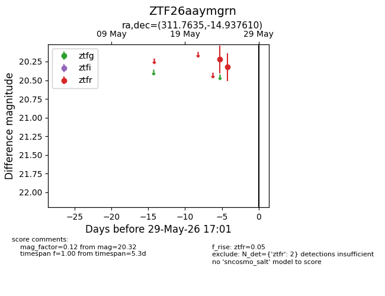
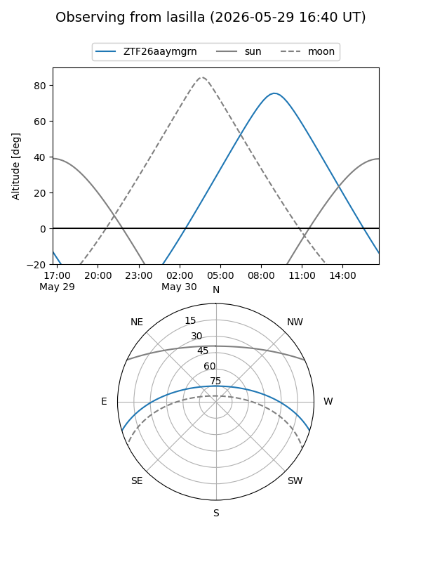
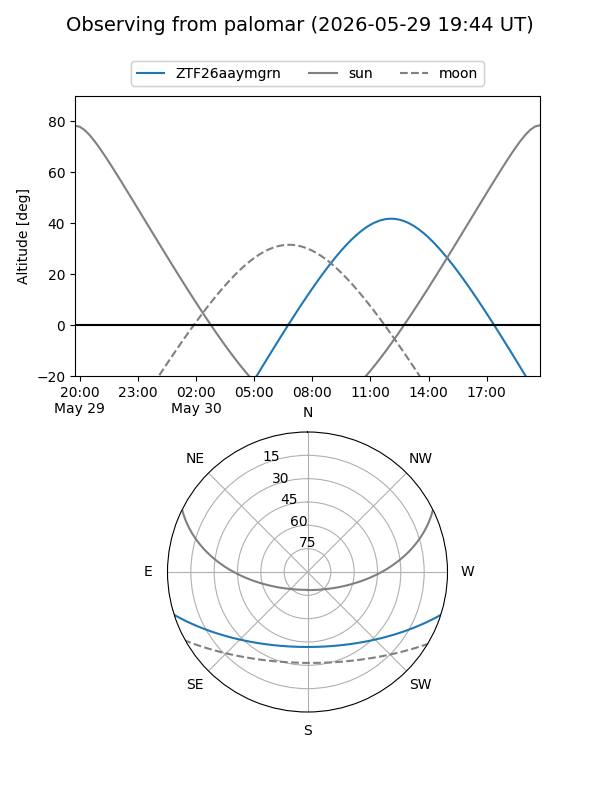

ZTF26aaymgrn
Target ZTF26aaymgrn at 2026-05-29 17:02
Aliases and brokers:
lsst-FINK: link
lsst-Lasair: link
lsst-ALeRCE: link
ztf-FINK: link
ztf-Lasair: link
ztf-ALeRCE: link
alt names
ZTF26aaymgrn (ztf,fink_ztf)
Coordinates:
equatorial (ra, dec) = 311.7635,-14.93761
equatorial (HMS+DMS) = 20:47:03.23,-14:56:15.39
galactic (l, b) = (31.8171,-32.21994)
Flags:
Photometry:
last ztfr=20.32
2 ztfr detections
Lightcurve

Visibility


Additional plots